52 coups ont ete ameliores ou remplaces (les 23 classes a remplacer sont tous passes sous le seuil ; reste 0). Les variantes des refontes A et B sont maintenant le geste par defaut (AFH_MOVEVAR=none restitue les anciens gestes pour comparer). Kaze (kaze_3, kaze_4, Jab genou talons, Lanceur du dragon, Fouet en trois, Poing tonnerre) n'est pas touche.
Les 50 supers et ultimes de tous les heros sont deja des enchainements multi-coups (15 a 35 coups, teleports, traversees, jongle aerien), sans contour noir : aucun n'est a retirer.
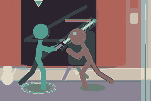
Retire : defaut R5a; geste partage; gel 8 pour 14 (score 5, 31 px)
Remplace par : images cles anticipation / impact / suivi (score 1, saut 30 px, refait)
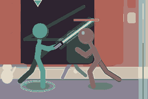
Retire : defaut R5a+R6a+R1b; saut 38 px; gel 10 pour 18 (score 5, 38 px)
Remplace par : images cles anticipation / impact / suivi (score 1, saut 30 px, refait)
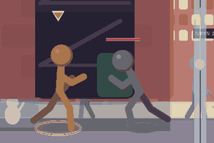
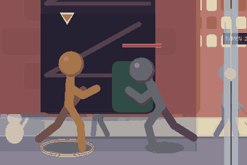
Retire : defaut R5a; gel 10 pour 18 (score 4, 20 px)
Remplace par : images cles anticipation / impact / suivi (score 1, saut 9 px, refait)
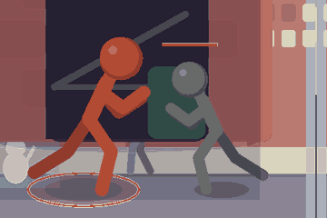
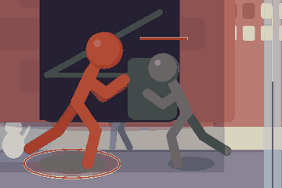
Retire : saut 96 px; geste partage; gel 6 pour 10 (score 4, 96 px)
Remplace par : images cles anticipation / impact / suivi (score 1, saut 20 px, refait)
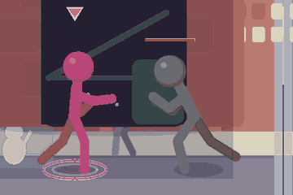
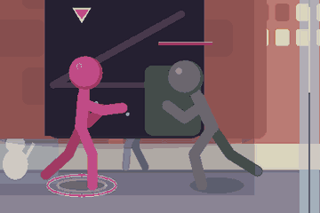
Retire : defaut R5a; gel 12 pour 21 (score 4, 21 px)
Remplace par : images cles anticipation / impact / suivi (score 1, saut 11 px, refait)
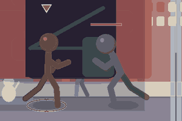
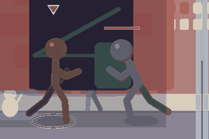
Retire : defaut R4c; gel 12 pour 27 (score 4, 21 px)
Remplace par : images cles anticipation / impact / suivi (score 1, saut 12 px, refait)
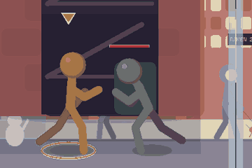
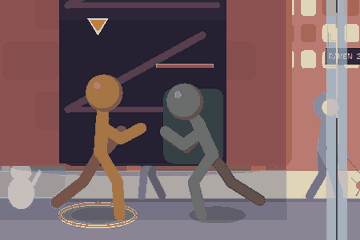
Retire : saut 68 px; geste partage (score 3, 68 px)
Remplace par : images cles anticipation / impact / suivi (score 0, saut 32 px, refait)
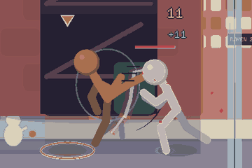
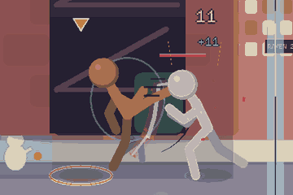
Retire : saut 74 px; geste partage (score 3, 74 px)
Remplace par : images cles anticipation / impact / suivi (score 0, saut 30 px, refait)
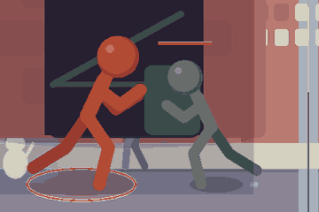
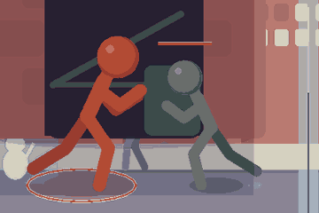
Retire : saut 96 px; geste partage (score 3, 96 px)
Remplace par : images cles anticipation / impact / suivi (score 0, saut 22 px, refait)
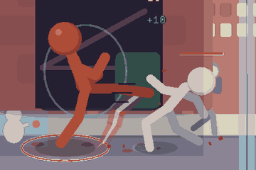
Retire : saut 36 px; geste partage; gel 7 pour 12 (score 3, 36 px)
Remplace par : images cles anticipation / impact / suivi (score 1, saut 17 px, refait)
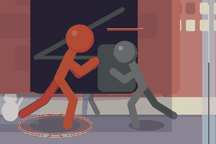
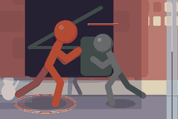
Retire : saut 59 px; gel 11 pour 19 (score 3, 59 px)
Remplace par : images cles anticipation / impact / suivi (score 1, saut 34 px, refait)
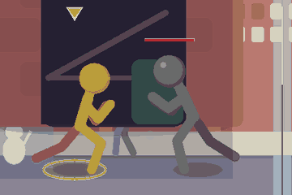
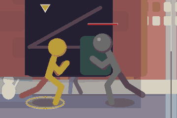
Retire : saut 48 px; gel 7 pour 12 (score 3, 48 px)
Remplace par : images cles anticipation / impact / suivi (score 1, saut 28 px, refait)
Retire : defaut R5a (score 3, 22 px)
Remplace par : images cles anticipation / impact / suivi (score 0, saut 35 px, refait)
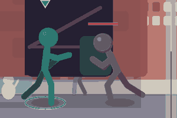
Retire : saut 64 px; geste partage (score 3, 64 px)
Remplace par : images cles anticipation / impact / suivi (score 0, saut 30 px, refait)
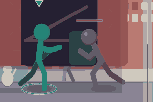
Retire : saut 67 px; geste partage (score 3, 67 px)
Remplace par : images cles anticipation / impact / suivi (score 0, saut 25 px, refait)
Retire : saut 63 px; geste partage (score 3, 63 px)
Remplace par : images cles anticipation / impact / suivi (score 0, saut 28 px, refait)
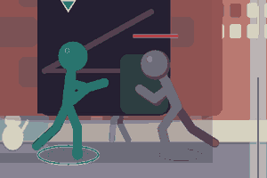
Retire : defaut R1b (score 3, 29 px)
Remplace par : images cles anticipation / impact / suivi (score 0, saut 22 px, refait)
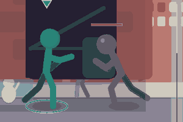
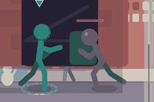
Retire : saut 67 px; geste partage (score 3, 67 px)
Remplace par : images cles anticipation / impact / suivi (score 1, saut 39 px, refait)
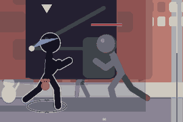
Retire : saut 52 px; gel 10 pour 18 (score 3, 52 px)
Remplace par : images cles anticipation / impact / suivi (score 2, saut 36 px, refait)
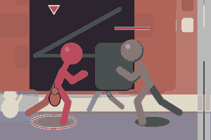
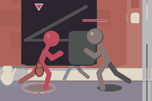
Retire : saut 45 px; gel 7 pour 13 (score 3, 45 px)
Remplace par : images cles anticipation / impact / suivi (score 1, saut 28 px, refait)
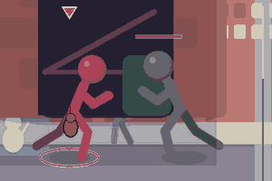
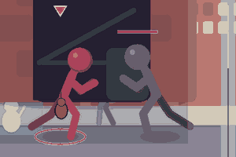
Retire : saut 58 px; gel 9 pour 17 (score 3, 58 px)
Remplace par : images cles anticipation / impact / suivi (score 1, saut 23 px, refait)
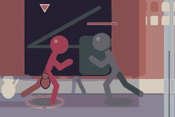
Retire : saut 48 px; gel 6 pour 11 (score 3, 48 px)
Remplace par : images cles anticipation / impact / suivi (score 1, saut 28 px, refait)
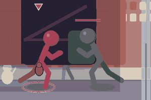
Retire : saut 54 px; gel 10 pour 17 (score 3, 54 px)
Remplace par : images cles anticipation / impact / suivi (score 1, saut 33 px, refait)
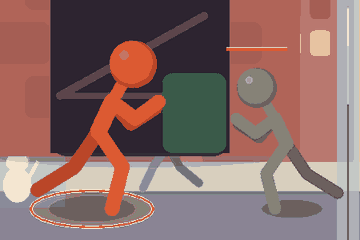
Retire : geste partage; gel 9 pour 16 (score 2, 17 px)
Remplace par : images cles anticipation / impact / suivi (score 1, saut 22 px, refait)
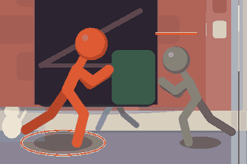
Retire : saut 36 px; geste partage (score 2, 36 px)
Remplace par : images cles anticipation / impact / suivi (score 0, saut 17 px, refait)
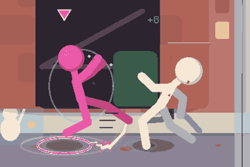
Retire : saut 54 px (score 2, 54 px)
Remplace par : images cles anticipation / impact / suivi (score 0, saut 20 px, refait)
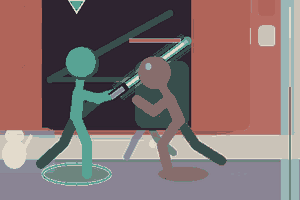
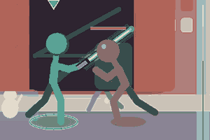
Retire : saut 53 px (score 2, 53 px)
Remplace par : images cles anticipation / impact / suivi (score 0, saut 31 px, refait)
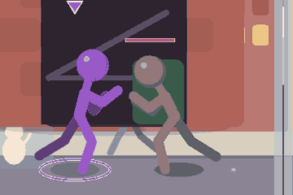
Retire : geste partage; gel 6 pour 10 (score 2, 31 px)
Remplace par : images cles anticipation / impact / suivi (score 1, saut 24 px, refait)
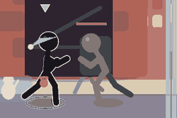
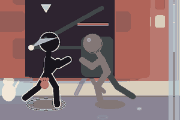
Retire : saut 37 px; gel 6 pour 11 (score 2, 37 px)
Remplace par : images cles anticipation / impact / suivi (score 1, saut 31 px, refait)
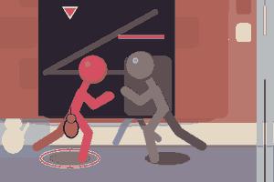
Retire : saut 38 px; gel 6 pour 10 (score 2, 38 px)
Remplace par : images cles anticipation / impact / suivi (score 1, saut 23 px, refait)
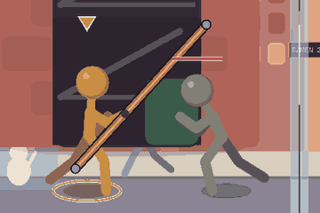
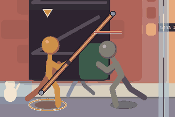
Retire : geste partage (score 1, 29 px)
Remplace par : images cles anticipation / impact / suivi (score 0, saut 19 px, refait)
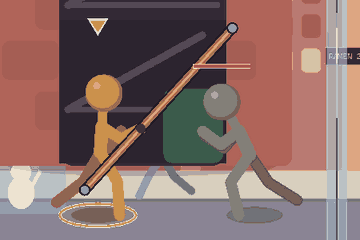
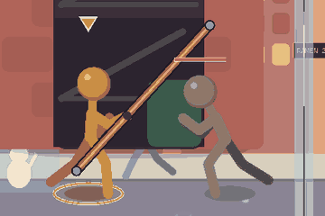
Retire : saut 40 px (score 1, 40 px)
Remplace par : images cles anticipation / impact / suivi (score 0, saut 24 px, refait)
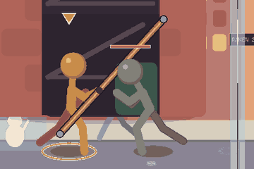
Retire : geste partage (score 1, 19 px)
Remplace par : images cles anticipation / impact / suivi (score 0, saut 15 px, refait)
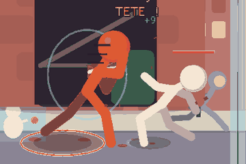
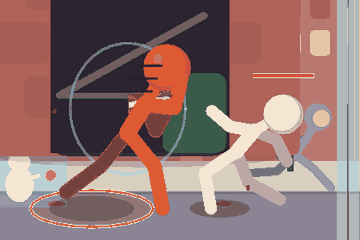
Retire : geste partage (score 1, 17 px)
Remplace par : images cles anticipation / impact / suivi (score 0, saut 25 px, refait)
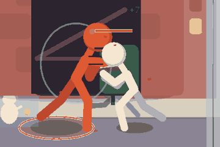
Retire : saut 44 px (score 1, 44 px)
Remplace par : images cles anticipation / impact / suivi (score 0, saut 24 px, refait)
Retire : saut 36 px (score 1, 36 px)
Remplace par : images cles anticipation / impact / suivi (score 0, saut 29 px, refait)
Retire : geste partage (score 1, 30 px)
Remplace par : images cles anticipation / impact / suivi (score 0, saut 23 px, refait)
Retire : saut 39 px (score 1, 39 px)
Remplace par : images cles anticipation / impact / suivi (score 0, saut 19 px, refait)
Retire : geste partage (score 1, 31 px)
Remplace par : images cles anticipation / impact / suivi (score 0, saut 21 px, refait)
Retire : geste partage (score 1, 22 px)
Remplace par : images cles anticipation / impact / suivi (score 0, saut 16 px, refait)
Retire : geste partage (score 1, 24 px)
Remplace par : images cles anticipation / impact / suivi (score 0, saut 17 px, refait)
Retire : geste partage (score 1, 22 px)
Remplace par : images cles anticipation / impact / suivi (score 0, saut 30 px, refait)
Retire : geste partage (score 1, 17 px)
Remplace par : images cles anticipation / impact / suivi (score 0, saut 24 px, refait)
Retire : geste partage (score 1, 21 px)
Remplace par : images cles anticipation / impact / suivi (score 0, saut 29 px, refait)
Retire : geste partage (score 1, 17 px)
Remplace par : images cles anticipation / impact / suivi (score 0, saut 28 px, refait)
Retire : geste partage (score 1, 31 px)
Remplace par : images cles anticipation / impact / suivi (score 0, saut 28 px, refait)
Retire : geste partage (score 1, 15 px)
Remplace par : images cles anticipation / impact / suivi (score 0, saut 15 px, refait)
Retire : geste partage (score 1, 18 px)
Remplace par : images cles anticipation / impact / suivi (score 0, saut 18 px, refait)
Retire : geste partage (score 1, 21 px)
Remplace par : images cles anticipation / impact / suivi (score 0, saut 15 px, refait)
Retire : geste partage (score 1, 15 px)
Remplace par : images cles anticipation / impact / suivi (score 0, saut 15 px, refait)
Retire : geste partage (score 1, 27 px)
Remplace par : images cles anticipation / impact / suivi (score 0, saut 27 px, refait)
Retire : geste partage (score 1, 27 px)
Remplace par : images cles anticipation / impact / suivi (score 0, saut 27 px, refait)